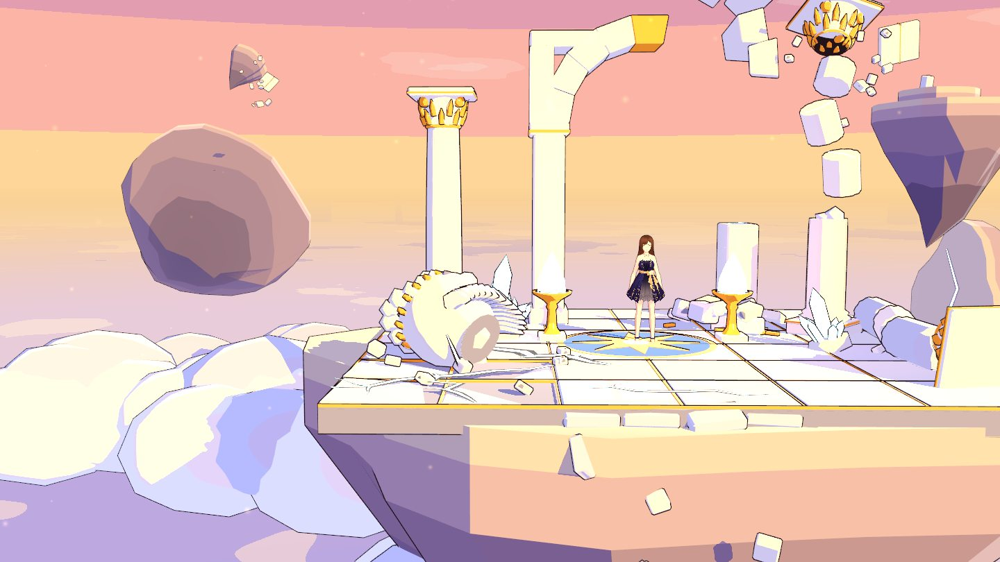
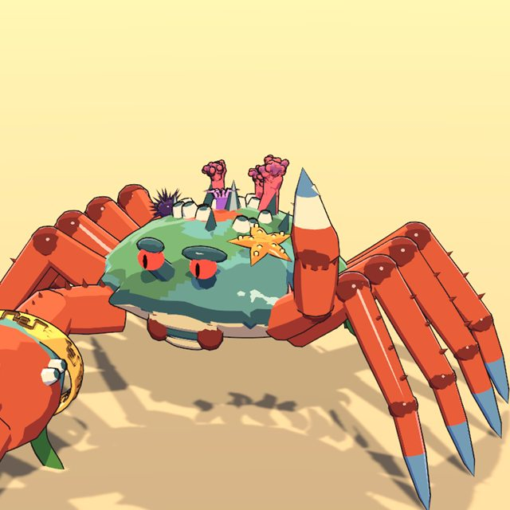

Combate
Combos, esquiva con dash, ataques en área y una habilidad definitiva que se carga peleando.

Acción cooperativa para 1–4 jugadores. El Olimpo ha saltado en pedazos y os toca ir recuperándolo, trozo a trozo.
youtubeId dentro de assets/js/site.js
En plena Titanomaquia, el choque entre Zeus y Cronos desató una explosión de poder que hizo pedazos el Olimpo. Sus fragmentos flotan ahora a la deriva, y en cada uno late un núcleo que los monstruos custodian y los titanes codician.
Atenea ha reunido a un grupo de héroes, la Égida, para recuperarlos. Desde la cumbre del Olimpo viajas a playas, coliseos y cuevas marinas, te enfrentas a sus guardianes y te traes el núcleo.

Combos, esquiva con dash, ataques en área y una habilidad definitiva que se carga peleando.
Vas reclutando héroes nuevos, como el centauro Kaelen, y eliges con quién sales hablando con Atenea.
Escila y Kaelen de momento; más adelante, titanes y el propio Zeus. Tienen varias fases y ataques que hay que aprenderse.
Cada misión da objetos, y en la forja del herrero los mejoras.
La base: mercado, arena de entrenamiento, forja, oráculo y la Gema desde la que viajas a cada fragmento.
Se juega con mando (con vibración) o teclado. Textos en español, inglés, portugués, alemán, francés, chino y japonés.
Pendiente Capturas provisionales del desarrollo. Cambiar por capturas finales a 1920×1080 con el HUD definitivo.
Imágenes provisionales sacadas de los modelos del juego.

Luchador de arena curtido en mil combates. Rápido, directo y siempre en primera línea.

Centauro guerrero que defiende el Coliseo con su lanza doble. Gánale el duelo y se unirá a la Égida.
Diosa de la estrategia. Fundó la Égida para reconstruir el Olimpo de su padre, aunque eso la enfrente a él.
Expulsado por la catástrofe que él mismo provocó, se aferra a su núcleo y no piensa entregarlo.

El terror de los estrechos. Tentáculos, fauces y una mirada de serpiente que no conviene sostener.

Nunca toca el suelo: vuela sobre la playa y cae en picado con su lanza.

Metro y medio de caparazón con pinzas que golpean como mazas.
Aprovecharon el caos para robar núcleos del Olimpo. Nadie sabe aún para qué los quieren.
Todas las misiones se pueden jugar solo o online con hasta cuatro jugadores. Invitas a tus amigos de Steam y entráis juntos al fragmento.